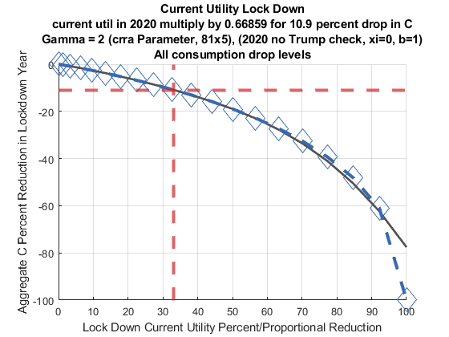

Chapter 12 Calibration
12.1 Model Calibration
Taking advantage of snw_calibrate_beta_norm_gdp from the PrjOptiSNW Package, this function calibrates the discount factor and also solves for the normalizing constant.
12.1.1 Calibrate Parameter Controls for SNW Functions
Set up controls for shock process and tiny/small/dense/densemore
clear all;
bl_print_mp_params = false;
% st_shock_method = 'rouwenhorst';
st_shock_method = 'tauchen';
% st_param_group = 'default_tiny';
% st_param_group = 'default_small';
% st_param_group = 'default_base';
% st_param_group = 'default_dense';
% st_param_group = 'default_moredense';
st_param_group = 'default_docdense';
mp_params = snw_mp_param(st_param_group, bl_print_mp_params, st_shock_method);
Pop = mp_params('Pop');Set up print defaults
mp_controls = snw_mp_control('default_test');
mp_controls('bl_timer') = true;
mp_controls('bl_print_vfi') = false;
mp_controls('bl_print_vfi_verbose') = false;
mp_controls('bl_print_ds') = false;
mp_controls('bl_print_ds_verbose') = false;12.1.2 Calibrate Routine
Test this for 3 iterations
%% Calibration
err=1;
tol=0.005;
it_counter = 1;
while err>tol && it_counter <= 10
disp('');
it=1;
while it>0
% Solve optimization problem and get the distribution
tm_start_a2 = tic;
a2_old = mp_params('a2');
[Phi_true,~,A_agg,Y_inc_agg,it,mp_dsvfi_results, a2] = snw_ds_main(mp_params, mp_controls);
mp_params('a2') = a2;
tm_end_a2 = toc(tm_start_a2);
disp(['a2_old:' num2str(a2_old) ', a2_new:' num2str(a2) ', tm_end_a2:' num2str(tm_end_a2)])
end
% Get Stats
mp_cl_mt_xyz_of_s = mp_dsvfi_results('mp_cl_mt_xyz_of_s');
tb_outcomes = mp_cl_mt_xyz_of_s('tb_outcomes');
A_agg_alt = tb_outcomes{'a_ss', 'mean'}*sum(Pop);
Aprime_agg_alt = tb_outcomes{'ap_ss', 'mean'}*sum(Pop);
Y_inc_agg_alt = tb_outcomes{'y_all', 'mean'}*sum(Pop);
Y_inc_median = tb_outcomes{'y_all', 'p50'};
% Comparison
name='Median household income (target=1.0)=';
name2=[name,num2str(Y_inc_median)];
disp(name2);
name='Aggregate wealth to aggregate income (target=3.0)=';
name2=[name,num2str(A_agg/Y_inc_agg)];
disp(name2);
err1=abs(Y_inc_median-1.0); % Target: Median household income (normalized to 1 in the model)
err2=abs((A_agg/Y_inc_agg)-3.0); % Target: Annual capital/income ratio of 3
err=max(err1,err2);
% Beta and Theta
theta = mp_params('theta');
beta = mp_params('beta');
param_update=[theta;beta];
if err>tol
theta=theta*((1.0/Y_inc_median)^0.2); % Normalize theta such that median household income equals 1
beta=beta*((3.0/(A_agg/Y_inc_agg))^0.025); % Calibrate beta such that annual capital/income ratio equals 3
end
mp_params('theta') = theta;
mp_params('beta') = beta;
param_update=[param_update(1,1),theta;param_update(2,1),beta];
it_counter = it_counter + 1;
name='Old/updated theta:';
st_theta=[name, num2str(param_update(1,:))];
name='Old/updated beta:';
st_beta=[name,num2str(param_update(2,:))];
disp(['counter=' num2str(it_counter) ...
';beta=' num2str(beta) ...
';theta=' num2str(theta)]);
end
Completed SNW_VFI_MAIN_BISEC_VEC;SNW_MP_PARAM=default_docdense;SNW_MP_CONTROL=default_test;time=489.7954
Completed SNW_DS_MAIN;SNW_MP_PARAM=default_docdense;SNW_MP_CONTROL=default_test;time=1835.3351
a2_old:1.5286, a2_new:1.4349, tm_end_a2:2440.3793
Completed SNW_VFI_MAIN_BISEC_VEC;SNW_MP_PARAM=default_docdense;SNW_MP_CONTROL=default_test;time=487.6941
Completed SNW_DS_MAIN;SNW_MP_PARAM=default_docdense;SNW_MP_CONTROL=default_test;time=1447.245
a2_old:1.4349, a2_new:1.4342, tm_end_a2:2051.784
Completed SNW_VFI_MAIN_BISEC_VEC;SNW_MP_PARAM=default_docdense;SNW_MP_CONTROL=default_test;time=483.8874
Completed SNW_DS_MAIN;SNW_MP_PARAM=default_docdense;SNW_MP_CONTROL=default_test;time=1352.0741
a2_old:1.4342, a2_new:1.4342, tm_end_a2:1951.1421
Median household income (target=1.0)=1.0024
Aggregate wealth to aggregate income (target=3.0)=3.0822
counter=2;beta=0.97051;theta=0.56495
Completed SNW_VFI_MAIN_BISEC_VEC;SNW_MP_PARAM=default_docdense;SNW_MP_CONTROL=default_test;time=493.7443
Completed SNW_DS_MAIN;SNW_MP_PARAM=default_docdense;SNW_MP_CONTROL=default_test;time=1570.3759
a2_old:1.4342, a2_new:1.4374, tm_end_a2:2178.0519
Completed SNW_VFI_MAIN_BISEC_VEC;SNW_MP_PARAM=default_docdense;SNW_MP_CONTROL=default_test;time=487.6095
Completed SNW_DS_MAIN;SNW_MP_PARAM=default_docdense;SNW_MP_CONTROL=default_test;time=1348.532
a2_old:1.4374, a2_new:1.4374, tm_end_a2:1948.8124
Median household income (target=1.0)=0.99971
Aggregate wealth to aggregate income (target=3.0)=3.0379
counter=3;beta=0.9702;theta=0.56499
Completed SNW_VFI_MAIN_BISEC_VEC;SNW_MP_PARAM=default_docdense;SNW_MP_CONTROL=default_test;time=486.5732
Completed SNW_DS_MAIN;SNW_MP_PARAM=default_docdense;SNW_MP_CONTROL=default_test;time=1503.2336
a2_old:1.4374, a2_new:1.439, tm_end_a2:2101.4027
Completed SNW_VFI_MAIN_BISEC_VEC;SNW_MP_PARAM=default_docdense;SNW_MP_CONTROL=default_test;time=485.2243
Completed SNW_DS_MAIN;SNW_MP_PARAM=default_docdense;SNW_MP_CONTROL=default_test;time=1334.6119
a2_old:1.439, a2_new:1.439, tm_end_a2:1933.0606
Median household income (target=1.0)=0.99853
Aggregate wealth to aggregate income (target=3.0)=3.0176
counter=4;beta=0.97006;theta=0.56515
Completed SNW_VFI_MAIN_BISEC_VEC;SNW_MP_PARAM=default_docdense;SNW_MP_CONTROL=default_test;time=503.3757
Completed SNW_DS_MAIN;SNW_MP_PARAM=default_docdense;SNW_MP_CONTROL=default_test;time=1423.8673
a2_old:1.439, a2_new:1.4393, tm_end_a2:2041.1993
Completed SNW_VFI_MAIN_BISEC_VEC;SNW_MP_PARAM=default_docdense;SNW_MP_CONTROL=default_test;time=497.2516
Completed SNW_DS_MAIN;SNW_MP_PARAM=default_docdense;SNW_MP_CONTROL=default_test;time=1386.4679
a2_old:1.4393, a2_new:1.4393, tm_end_a2:1998.5793
Median household income (target=1.0)=0.99813
Aggregate wealth to aggregate income (target=3.0)=3.0084
counter=5;beta=0.96999;theta=0.56536
Completed SNW_VFI_MAIN_BISEC_VEC;SNW_MP_PARAM=default_docdense;SNW_MP_CONTROL=default_test;time=501.2822
Completed SNW_DS_MAIN;SNW_MP_PARAM=default_docdense;SNW_MP_CONTROL=default_test;time=1375.2408
a2_old:1.4393, a2_new:1.4393, tm_end_a2:1990.0337
Median household income (target=1.0)=0.99829
Aggregate wealth to aggregate income (target=3.0)=3.0041
counter=6;beta=0.96999;theta=0.5653612.2 Model Lockdown Calibration
Taking advantage of snw_calibrate_lockdown_c from the PrjOptiSNW Package. This function finds the proportional discount to current utility in one period to account for aggregate reducntions in consumption during lockdown.
12.2.1 Lock Down Impact on Consumption
"To calibrate the drop in marginal utility, we estimate that 10.9 percent of the goods that make up the consumer price index become highly undesirable, or simply unavailable, during the pandemic: food away from home, public transportation including airlines, and motor fuel. As we use a coefficient of risk aversion equal to one, we simply multiply utility from consumption during the period of the epidemic by a factor of 0.891"
There is one MIT shock period in which households face a one-period change in the current utility of consumption due to lock down. Solve the model and evaluate the effects on aggregate consumption (during the MIT shock period) with different proportional adjustments on consumption given differing intertemperal preference assumptions.
12.2.2 Graphical Illustraiton for Gamma=2 (docdense) and Gamma=1 (dense)
Solved Gamma=2 with docdense (81x5 shocks), and Gamma=1 with dense (7x5) shocks. Did not have time to resolve Gamma=1 with docdense.
Solved for gamma equals to 2, results visualized below.
% Percentage C drop desired
fl_c_drop_percent = 0.109;First, grid of proportional one period current utility shifts:
% Grid of proportional one period current utility shifts.
[fl_invbtlock_min, fl_invbtlock_max, it_invbtlock_points] = deal(0, 1, 20);
st_grid_type = 'grid_powerspace';
mp_grid_control = containers.Map('KeyType', 'char', 'ValueType', 'any');
mp_grid_control('grid_powerspace_power') = 1.5;
[ar_fl_invbtlock] = ff_saveborr_grid(...
fl_invbtlock_min, fl_invbtlock_max, it_invbtlock_points, ...
st_grid_type, mp_grid_control);
ar_fl_invbtlock = 1-ar_fl_invbtlock;
% display
% disp(ar_fl_invbtlock);Second, stored aggregate consumption values from docdense:
% From gamma=2 docdense
ar_fl_cons_mean_betaedu_innerwgt_gamma2_docdense = [...
1.0466,1.0434,1.0374,1.0293,...
1.0191,1.0067,0.99214,0.97543,...
0.95642,0.93482,0.90995,0.88078,...
0.847,0.80734,0.76126,0.70507,...
0.635, 0.54343, 0.40755, 0.00013065];
% From gamma=1 dense
ar_fl_cons_mean_betaedu_innerwgt_gamma1_dense = [...
1.2517,1.2467,1.237,1.2228,...
1.2031,1.1783,1.1489,1.1147,...
1.0754,1.0311,0.98169,0.92291,...
0.85528,0.77933,0.69408,0.5964,...
0.47976, 0.34416, 0.18672, 0.00013642];Third, polynomial fit (4th order) between the 3rd and 14th point:
% Generate polynomial fit coefficients
ft_polynomial_gamma2_docdense = polyfit(ar_fl_invbtlock(3:13), ...
ar_fl_cons_mean_betaedu_innerwgt_gamma2_docdense(3:13), 4);
ft_polynomial_gamma1_dense = polyfit(ar_fl_invbtlock(3:13), ...
ar_fl_cons_mean_betaedu_innerwgt_gamma1_dense(3:13), 4);
% Evaluate polynomial fits
ar_fl_cons_mean_polyfit_gamma2_docdense = ...
polyval(ft_polynomial_gamma2_docdense, ar_fl_invbtlock)';
ar_fl_cons_mean_polyfit_gamma1_dense = ...
polyval(ft_polynomial_gamma1_dense, ar_fl_invbtlock)';Fourth, find which proportional current utility change in 2020 matches a 10.9 percent drop in aggregate consumption in 2020:
% Identify the exact point along polynomial where c drops by 10.9 percent
% Gamma = 2, docdense
ar_fl_invbtlock_interpgrid = linspace(0.50, 0.95, 100000);
ar_fit_reduce_grid = 1 - ...
polyval(ft_polynomial_gamma2_docdense, ar_fl_invbtlock_interpgrid)...
./ar_fl_cons_mean_polyfit_gamma2_docdense(1);
[fl_mingap, it_minidx] = min(abs(ar_fit_reduce_grid-fl_c_drop_percent));
fl_fit_best_reduce = ar_fl_invbtlock_interpgrid(it_minidx);
fl_lockdown_u_prop_reduction_gamma2_docdense = (1-fl_fit_best_reduce)*100;
st_reduction_gamma2_docdense = ['current util in 2020 multiply by ', ...
num2str(fl_fit_best_reduce), ...
' for 10.9 percent drop in C'];
% Gamma = 1, dense
ar_fl_invbtlock_interpgrid = linspace(0.50, 0.95, 100000);
ar_fit_reduce_grid = 1 - ...
polyval(ft_polynomial_gamma1_dense, ar_fl_invbtlock_interpgrid)...
./ar_fl_cons_mean_polyfit_gamma1_dense(1);
[fl_mingap, it_minidx] = min(abs(ar_fit_reduce_grid-fl_c_drop_percent));
fl_fit_best_reduce = ar_fl_invbtlock_interpgrid(it_minidx);
fl_lockdown_u_prop_reduction_gamma1_dense = (1-fl_fit_best_reduce)*100;
st_reduction_gamma1_dense = ['current util in 2020 multiply by ', ...
num2str(fl_fit_best_reduce), ...
' for 10.9 percent drop in C'];Third, graphical illustration:
for it_graph_type=1:2
if (it_graph_type == 1)
st_title_add = 'Zoomed in';
else
st_title_add = 'All consumption drop levels';
end
for it_gamma=2:1:2
figure();
hold on;
if (it_graph_type == 1 && it_gamma == 1)
ar_fl_cons_mean_betaedu_innerwgt_select = ...
ar_fl_cons_mean_betaedu_innerwgt_gamma1_dense(1:12);
ar_fl_cons_mean_polyfit_select = ...
ar_fl_cons_mean_polyfit_gamma1_dense(1:12);
st_gamma = 'Gamma = 1 (crra Parameter, 7x5), (2020 no Trump check, xi=0, b=1)';
fl_lockdown_u_prop_reduction = fl_lockdown_u_prop_reduction_gamma1_dense;
st_reduction = st_reduction_gamma1_dense;
elseif (it_graph_type == 1 && it_gamma == 2)
ar_fl_cons_mean_betaedu_innerwgt_select = ...
ar_fl_cons_mean_betaedu_innerwgt_gamma2_docdense(1:12);
ar_fl_cons_mean_polyfit_select = ...
ar_fl_cons_mean_polyfit_gamma2_docdense(1:12);
st_gamma = 'Gamma = 2 (crra Parameter, 81x5), (2020 no Trump check, xi=0, b=1)';
fl_lockdown_u_prop_reduction = fl_lockdown_u_prop_reduction_gamma2_docdense;
st_reduction = st_reduction_gamma2_docdense;
elseif (it_graph_type == 2 && it_gamma == 1)
ar_fl_cons_mean_betaedu_innerwgt_select = ...
ar_fl_cons_mean_betaedu_innerwgt_gamma1_dense;
ar_fl_cons_mean_polyfit_select = ...
ar_fl_cons_mean_polyfit_gamma1_dense;
st_gamma = 'Gamma = 1 (crra Parameter, 7x5), (2020 no Trump check, xi=0, b=1)';
fl_lockdown_u_prop_reduction = fl_lockdown_u_prop_reduction_gamma1_dense;
st_reduction = st_reduction_gamma1_dense;
elseif (it_graph_type == 2 && it_gamma == 2)
ar_fl_cons_mean_betaedu_innerwgt_select = ...
ar_fl_cons_mean_betaedu_innerwgt_gamma2_docdense;
ar_fl_cons_mean_polyfit_select = ...
ar_fl_cons_mean_polyfit_gamma2_docdense;
st_gamma = 'Gamma = 2 (crra Parameter, 81x5), (2020 no Trump check, xi=0, b=1)';
fl_lockdown_u_prop_reduction = fl_lockdown_u_prop_reduction_gamma2_docdense;
st_reduction = st_reduction_gamma2_docdense;
end
ar_fl_invbtlock_select = ar_fl_invbtlock(1:length(ar_fl_cons_mean_betaedu_innerwgt_select));
ar_x = 1-ar_fl_invbtlock_select;
ar_y = -(1-ar_fl_cons_mean_betaedu_innerwgt_select/ar_fl_cons_mean_betaedu_innerwgt_select(1));
ar_y_poly = -(1-ar_fl_cons_mean_polyfit_select/ar_fl_cons_mean_polyfit_select(1));
ar_x = ar_x*100;
ar_y = ar_y*100;
ar_y_poly = ar_y_poly*100;
% Points scatter
scatter(ar_x, ar_y, 300, [57 106 177]./255, 'd');
% Points polynomial approximate
pl_poly = plot(ar_x, ar_y_poly);
pl_poly.Color = [83 81 84]./255;
pl_poly.LineStyle = '-';
pl_poly.LineWidth = 2;
% Actual lines linearly connected
line = plot(ar_x, ar_y);
line.Color = [57 106 177]./255;
line.LineStyle = '--';
line.LineWidth = 3;
% X-axis for -10.9 percent
yline0 = yline(-10.9);
yline0.HandleVisibility = 'off';
yline0.Color = [204 37 41]./255;
yline0.LineStyle = '--';
yline0.LineWidth = 3;
% Y-axis for -10.9 percent along the polynomial
xline0 = xline(fl_lockdown_u_prop_reduction);
xline0.HandleVisibility = 'off';
xline0.Color = [204 37 41]./255;
xline0.LineStyle = '--';
xline0.LineWidth = 3;
% labeling
title({'Current Utility Lock Down',...
st_reduction, st_gamma, ...
st_title_add});
ylabel('Aggregate C Percent Reduction in Lockdown Year');
xlabel('Lock Down Current Utility Percent/Proportional Reduction');
grid on;
end
end

Fourth, tabular display for Gamma 2:
%% Table Dispaly
% Generate Table
tb_show = array2table([ar_x,ar_y',ar_y_poly']);
it_num_rows = length(ar_x);
% Generate Row and Column Names
cl_col_names = {'Lock Down Util Perc Reduce', 'Agg C Percent Reduc Lockdown Yr', 'Agg C Percent Reduc Polynomial Fit'};
cl_row_names = strcat('lockdown_', string((1:it_num_rows)));
tb_show.Properties.VariableNames = matlab.lang.makeValidName(cl_col_names);
tb_show.Properties.RowNames = matlab.lang.makeValidName(cl_row_names);
disp(tb_show);
LockDownUtilPercReduce AggCPercentReducLockdownYr AggCPercentReducPolynomialFit
______________________ __________________________ _____________________________
lockdown_1 0 0 0
lockdown_2 1.2075 -0.30575 -0.29672
lockdown_3 3.4152 -0.87904 -0.86414
lockdown_4 6.2741 -1.653 -1.643
lockdown_5 9.6596 -2.6276 -2.6234
lockdown_6 13.5 -3.8123 -3.8041
lockdown_7 17.746 -5.2035 -5.1879
lockdown_8 22.362 -6.8001 -6.7823
lockdown_9 27.322 -8.6165 -8.6029
lockdown_10 32.601 -10.68 -10.679
lockdown_11 38.183 -13.057 -13.058
lockdown_12 44.051 -15.844 -15.817
lockdown_13 50.193 -19.071 -19.067
lockdown_14 56.596 -22.861 -22.966
lockdown_15 63.25 -27.264 -27.728
lockdown_16 70.147 -32.632 -33.635
lockdown_17 77.277 -39.327 -41.055
lockdown_18 84.634 -48.077 -50.447
lockdown_19 92.21 -61.06 -62.385
lockdown_20 100 -99.988 -77.569 12.3 UI Benefit Unemployment Lost Wage Recovery Parameter b Calibration
Taking advantage of snw_calibrate_2009_b from the PrjOptiSNW Package.
The ratio of UI benefits to wages and salary is 2.1 percent in 2009. \(\xi \in [0,1]\) governs the duration of unemployment shock for those unemployed. This equals to 0.532 in 2009 (\(\xi\) = 0 no wages earned).
We solve for total wage earnings from unemployed and employed in 2009, for employed, same as under steady-state. For unemployed, they lose (\(1-\xi\)) share of the wage they would otherwise have earned. Our unemployment probability in 2009 is conditional on age and edu groups (SNW_UNEMP_2008.m) computed based on rectiilnear restriction.
We know total UI amount (multiply its share of total "Wages and salary" by total "wages and salary". We know how much wage was lost due to \(\xi\). The ratio of these two levels is b, which is the parameter that is the share of lost-wage recovered. Note that this is based on exogenous wage earnings, so we do not have to worry about endogenous changes to savings. We will solve for the steady-state distribution, which generates mass of people by age, education, marital status, kids count, etc.
12.3.1 Calibrate b with 2.1% UI Benefits to Wages Ratio and \(\xi =0.532\)
Using various default parameters, including the default unemployment in 2009 matrix, and the default \(\xi =0.532\) parameter, compute b.
% Solve parameters
mp_more_inputs = containers.Map('KeyType','char', 'ValueType','any');
mp_more_inputs('fl_ss_non_college') = 0.225;
mp_more_inputs('fl_ss_college') = 0.271;
mp_more_inputs('fl_scaleconvertor') = 54831;
% st_param_group = 'default_small';
st_param_group = 'default_docdense';
mp_params = snw_mp_param(st_param_group, false, 'tauchen', false, 8, 8, mp_more_inputs);
% Controls
mp_controls = snw_mp_control('default_test');
% no b, solving for b, b set to 0 when solving for wages
xi=0.532; % Proportional reduction in income due to unemployment (xi=0 refers to 0 labor income; xi=1 refers to no drop in labor income)
mp_params('xi') = xi;
% Solve for Unemployment Values
mp_controls('bl_print_vfi') = false;
mp_controls('bl_print_vfi_verbose') = false;
mp_controls('bl_print_ds') = false;
mp_controls('bl_print_ds_verbose') = false;
mp_controls('bl_print_calibrate_2009') = true;
mp_controls('bl_print_calibrate_2009_verbose') = false;
% 2.1% UI Benefits to Wages and Salary Ratio
fl_ratio_ui_benefits_to_wage = 0.021;
% Solve
[fl_b_calibrated_by_ui_share, ...
mp_stats_wage_ui_spending, ...
mn_earn_tot_wgted, mn_earn_unemp_wgted, ...
mn_earn_unemp_tot_wgted, mn_earn_unemp_weighted_wgted] = ...
snw_calibrate_2009_b(mp_params, mp_controls, ...
fl_ratio_ui_benefits_to_wage);
Completed SNW_VFI_MAIN_BISEC_VEC;SNW_MP_PARAM=default_docdense;SNW_MP_CONTROL=default_test;time=310.4866
Completed SNW_DS_MAIN_VEC;SNW_MP_PARAM=default_docdense;SNW_MP_CONTROL=default_test;time=1294.5472
Completed SNW_calibrate_2009;SNW_MP_PARAM=default_docdense;SNW_MP_CONTROL=default_test;time=1668.355
----------------------------------------
xxxxxxxxxxxxxxxxxxxxxxxxxxxxxxxxxxxxxxxx
CONTAINER NAME: mp_stats_wage_ui_spending Scalars
xxxxxxxxxxxxxxxxxxxxxxxxxxxxxxxxxxxxxxxx
i idx value
_ ___ _______
fl_b_calibrated_by_ui_share 1 1 0.37451
fl_total_b_spending 2 2 1.1333
fl_total_wage 3 3 53.969
fl_total_wage_unemp_hhhead 4 4 3.4401
fl_total_wage_unemp_hhhead_and_spouse 5 5 6.0062
fl_total_wage_unemp_hhhead_lost 6 6 3.026212.3.2 Calibrate b with 5.68% UI Benefits to Wages Ratio and \(\xi =0.651\)
Change the benefit share and \(\xi\) parameter to COVID values. The \(b\) we find below is not what should be used for COVID, the unemployment probability is based on 2009 crisis still. That is hard-coded into the snw_calibrate_2009_b function.
% Solve parameters
mp_more_inputs = containers.Map('KeyType','char', 'ValueType','any');
mp_more_inputs('fl_ss_non_college') = 0.225;
mp_more_inputs('fl_ss_college') = 0.271;
mp_more_inputs('fl_scaleconvertor') = 54831;
% st_param_group = 'default_small';
st_param_group = 'default_dense';
mp_params = snw_mp_param(st_param_group, false, 'tauchen', false, 8, 8, mp_more_inputs);
% Controls
mp_controls = snw_mp_control('default_test');
% no b, solving for b, b set to 0 when solving for wages
xi=0.651; % Proportional reduction in income due to unemployment (xi=0 refers to 0 labor income; xi=1 refers to no drop in labor income)
mp_params('xi') = xi;
% Solve for Unemployment Values
mp_controls('bl_print_vfi') = false;
mp_controls('bl_print_vfi_verbose') = false;
mp_controls('bl_print_ds') = false;
mp_controls('bl_print_ds_verbose') = false;
mp_controls('bl_print_calibrate_2009') = true;
mp_controls('bl_print_calibrate_2009_verbose') = false;
% 2.1% UI Benefits to Wages and Salary Ratio
fl_ratio_ui_benefits_to_wage = 0.0568;
% Solve
[fl_b_calibrated_by_ui_share, ...
mp_stats_wage_ui_spending, ...
mn_earn_tot_wgted, mn_earn_unemp_wgted, ...
mn_earn_unemp_tot_wgted, mn_earn_unemp_weighted_wgted] = ...
snw_calibrate_2009_b(mp_params, mp_controls, ...
fl_ratio_ui_benefits_to_wage);
Completed SNW_VFI_MAIN_BISEC_VEC;SNW_MP_PARAM=default_dense;SNW_MP_CONTROL=default_test;time=14.9366
Completed SNW_DS_MAIN_VEC;SNW_MP_PARAM=default_dense;SNW_MP_CONTROL=default_test;time=37.6607
Completed SNW_calibrate_2009;SNW_MP_PARAM=default_dense;SNW_MP_CONTROL=default_test;time=55.5689
----------------------------------------
xxxxxxxxxxxxxxxxxxxxxxxxxxxxxxxxxxxxxxxx
CONTAINER NAME: mp_stats_wage_ui_spending Scalars
xxxxxxxxxxxxxxxxxxxxxxxxxxxxxxxxxxxxxxxx
i idx value
_ ___ ______
fl_b_calibrated_by_ui_share 1 1 1.3973
fl_total_b_spending 2 2 3.8087
fl_total_wage 3 3 67.055
fl_total_wage_unemp_hhhead 4 4 5.0843
fl_total_wage_unemp_hhhead_and_spouse 5 5 8.3311
fl_total_wage_unemp_hhhead_lost 6 6 2.7257